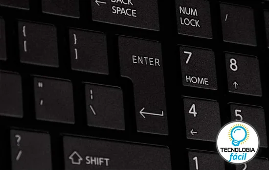
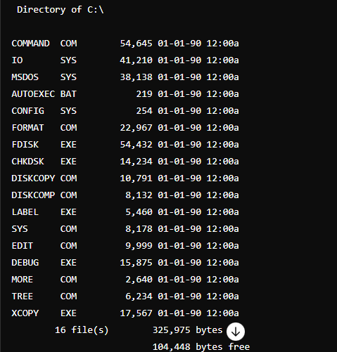

La unidad asignada no es más que el directorio o carpeta principal que contendrá todos los datos que conformarán los programas y archivos. Y para crear y manipular estos archivos y carpetas, el sistema operativo cuenta con una serie decomandos preestablecidos que puede "entender"y trabajar en función de estos.
Así, y suponiendo que al encender nuestro ordenador en el año 1990 y ver el símbolo del sistema posicionado en C:\> lo primero que podíaamos hacer es pedirle a nuestro flamante equipo que nos mostrara el contenido; así que tecleamos la palabra "dir" y presionamos la tecla "intro" o "enter"
Mágicamente, en la pantalla aparecía todo el contenido de la unidad C:\> que para el usuario común era una lista incomprensible de archivos que era preferible ni tocar.
Entonces comprendíamos. Esos archivos no se tocan o nos tocará llamar al técnico, así que había que crear una carpeta en la que tener nuestros archivos particulares separados de esos otros intocables. Así que tecleabamos el comando "md" seguido del nombre de la carpeta que queríamos crear: "md mi_carpeta".
Para estar seguros, porque el sistema no nos daba ninguna confirmación o mensaje de que lo que hicimos haya tenido éxito, más sí lo hacía si había fallado, tecleabamos de nuevo "dir" y listo, aparecía la misma lista con nuestra carpeta nueva como nuevo item. Este nuevo item se diferenciaba de los otros porque carecía de extensión, ya que las extensiones son propiedad de los archivos, no de las carpetas.
Una extensión es aquella parte del archivo que sirve para ubicarlo dentro de una categoría (música, imagen, video, documento, entre otros). Para construir un archivo, basta con colocarle un nombre, luego un punto y una extensión, así: "nombre.extension"
Entonces nuestra creación no tenía extensión, por lo tanto era una carpeta; y estaba ahí en la lista, recuerden que no había interfaz gráfica como windows donde podíamos hacer este proceso como lo hacemos ahora. Bien, ahora teníamos que entrar a la carpeta, así que tecleabamos el comando "cd" seguido del nombre de nuestra carpeta: "cd carpeta", y qué aparecía?
C:\mi_carpeta>
Emocionante, para chismear, volvíamos a teclear "dir" a sabiendas de que no habíamos creado nada ahí, entonces la sorpresa: hay dos items ahí, qué son? uno es un punto (.) y el otro son dos puntos (..)
Bueno, el punto es el sitio en el que estamos (mi_carpeta) y los dos puntos significa "regreso" o "volver". O cómo tenían pensado salir de la carpeta? bueno, se usa el mismo comando "cd" seguido de esos dos puntos: "cd.."
Lo que seguía era crear un archivo dentro de esa nueva carpeta, asi que usábamos el comando "edit" seguido del nombre y extensión del archivo a crear: "edit hola.txt" y esto nos abría un editor de texto integrado y podíamos escribir cualquier cosa. Luego guardábamos nuestro aarchivo con la combinación de teclas "Alt + s" y listo. Luego usabamos la combinación "Alt + x" para salir del editor.
si tecleabamos nuevamente "dir", podíamos ver, aparte del punto y los dos puntos, nuestro archivo hola.txt
finalmente, y para no tener la pantalla hecha un lío, tecleabamos el comando "cls" y desaparecía todo.
Practiquemos un poco:
El comando "md" se usa para moverse entre directorios?